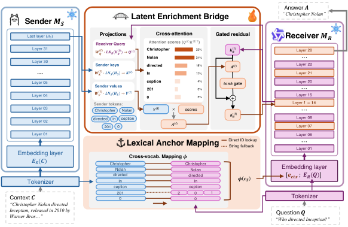

Why it matters왜 중요한가
Heterogeneous multi-agent systems are attractive precisely because the agents disagree — different families bring different inductive biases, so they stop degenerating into majority voting. But that same diversity is what makes them unable to talk without falling back on text.
이종(異種) 멀티에이전트 시스템이 매력적인 이유는 바로 에이전트들이 서로 다르기 때문이다. 계열이 다르면 귀납 편향도 달라 다수결로 퇴화하지 않는다. 그런데 바로 그 다양성 때문에 텍스트 없이는 서로 대화할 수 없다.
Latent communication has been the obvious escape hatch: skip the sender's autoregressive decoding, ship continuous state instead. The catch is that nearly every working method assumes architectural homogeneity — KV-cache sharing needs matching attention layouts, hidden-state injection needs matching dimensions and tokenizers. Cross-family, you are left with a learned projection, and this paper's contribution is to show precisely how that projection fails. It is not a general blurring. Context survives; identity does not. The receiver reconstructs that someone directed a film in 2010 and loses which someone. That is a specific, diagnosable failure with a specific fix, and the fix turns out not to be a better projection.
잠재 통신은 명백한 탈출구였다. 송신자의 자기회귀 디코딩을 건너뛰고 연속 상태를 그대로 보내는 것이다. 문제는 작동하는 방법 대부분이 구조적 동질성을 전제한다는 데 있다. KV 캐시 공유는 동일한 어텐션 레이아웃을, 은닉 상태 주입은 동일한 차원과 토크나이저를 요구한다. 계열이 다르면 남는 건 학습된 사영뿐이고, 이 논문의 기여는 그 사영이 어떻게 실패하는지를 정확히 짚은 것이다. 전면적인 흐려짐이 아니다. 문맥은 살아남고 정체성이 죽는다. 수신자는 누군가가 2010년에 어떤 영화를 감독했다는 것은 복원하지만, 그 누군가가 누구인지는 잃는다. 진단 가능한 구체적 실패이고 구체적 해법이 있으며, 그 해법은 더 나은 사영이 아니었다.

By the numbers핵심 숫자
The main result핵심 결과
| Method | Countries | HotpotQA | MuSiQue | 2Wiki | Avg (7 tasks) |
|---|---|---|---|---|---|
| NoComm (question only)(질문만) | 0.0 | 24.6 | 10.6 | 19.3 | 20.8 |
| FullComm (reads full context)(전체 문맥 직독) | 50.8 | 78.4 | 31.5 | 47.6 | 55.2 |
| NLCommhetero (128-token summary)(128토큰 요약) | 22.6 | 68.5 | 32.5 | 14.2 | 41.8 |
| XBridge | 72.5 | 78.8 | 48.2 | 51.1 | 63.2 |
The Countries column is the one that carries the paper's real argument. The context says where a person is standing — "Eve is at the Uppland Runic Inscription 896" — and the question asks which country. The answer, "Sweden", appears nowhere in the context. A receiver reading the raw text scores 50.8; a receiver that also gets the sender's hidden states scores 72.5. That gap is the sender's landmark-to-country inference arriving as a latent, having never been written down.
논문의 진짜 논지를 지고 있는 열은 Countries다. 문맥은 인물이 서 있는 장소를 말해준다 — "Eve is at the Uppland Runic Inscription 896" — 그리고 질문은 어느 나라인지 묻는다. 정답 "Sweden"은 문맥 어디에도 없다. 원문을 읽는 수신자는 50.8을 받고, 송신자의 은닉 상태까지 받는 수신자는 72.5를 받는다. 그 격차가 바로 송신자의 랜드마크→국가 추론이 한 번도 문자로 적히지 않은 채 잠재 상태로 도착한 것이다.
The two channels두 개의 채널
Lexical Anchor Mapping
The discrete channel, and the one that needs no training at all. A map φ: VS → VR* is precomputed once per tokenizer pair. Tokens whose surface string exists in both vocabularies are a direct ID-to-ID lookup; the rest are decoded to a string and re-tokenized with the receiver's tokenizer, expanding in place. It is lossless on surface content and costs under 1 ms. Crucially the mapped IDs go through the receiver's own frozen embedding table, so the transferred context lands in exactly the space the receiver's pretrained self-attention already knows how to read. The tokenizer gap is real but survivable: Llama→Qwen mismatches are almost entirely multi-digit numbers, while Mistral's 32K SentencePiece vocabulary sends common words through the fallback ("Angeles" → [An, ge, les]).
이산 채널이며, 학습이 전혀 필요 없는 쪽이다. 매핑 φ: VS → VR*를 토크나이저 쌍마다 한 번 미리 계산한다. 표면 문자열이 양쪽 어휘에 모두 있는 토큰은 ID 직접 조회로, 나머지는 문자열로 디코딩한 뒤 수신자 토크나이저로 재토크나이즈해 그 자리에서 확장한다. 표면 내용에 대해 무손실이며 1 ms 미만이 든다. 결정적으로 매핑된 ID는 수신자 자신의 동결 임베딩 테이블을 통과하므로, 전달된 문맥은 수신자의 사전학습된 셀프어텐션이 이미 읽을 줄 아는 바로 그 공간에 안착한다. 토크나이저 격차는 실재하지만 견딜 만하다. Llama→Qwen 불일치는 거의 전부 여러 자리 숫자이고, Mistral의 32K SentencePiece 어휘는 흔한 단어도 폴백으로 보낸다("Angeles" → [An, ge, les]).
Latent Enrichment Bridge
The continuous channel, and the only trained component. Four gated cross-attention modules (~66M each) sit at layers 6, 13, 20, 27 of the receiver's 28, following Flamingo's insertion density. The receiver's hidden state at that layer becomes the query; the sender's last-layer states become keys and values, with the projection matrices doing double duty as the dS→dR translation. The output re-enters through h′ = h + tanh(α)·A with α initialized to 1.0 rather than Flamingo's zero — with a 10-minute training budget the bridge cannot afford to discover itself. Four modules is the sweet spot: two (74.6 F1) underfit, seven (75.8) overfit the 587 samples.
연속 채널이며, 학습되는 유일한 구성요소다. 게이트 교차어텐션 4개(각 약 66M)가 수신자 28개 층 중 6·13·20·27층에 배치되는데, Flamingo의 삽입 밀도를 따른 것이다. 해당 층의 수신자 은닉 상태가 query가 되고, 송신자의 마지막 층 상태가 key·value가 되며, 사영 행렬이 dS→dR 변환까지 겸한다. 출력은 h′ = h + tanh(α)·A로 되돌아오는데, α는 Flamingo의 0이 아니라 1.0으로 초기화된다. 10분 학습 예산으로는 브리지가 스스로를 발견할 여유가 없기 때문이다. 모듈 4개가 최적점이다. 2개(74.6 F1)는 과소적합, 7개(75.8)는 587 샘플에 과적합한다.
Grounding without a fusion layer융합 층 없는 접지
There is no module that combines the two channels. LAM's anchors enter as ordinary input embeddings and propagate through the receiver's own self-attention, which means that by layer 6 the receiver's hidden state already encodes which entities are present and where — and that hidden state is what LEB uses as its query. The grounding is emergent from ordering, not engineered. This is why the ablation is so lopsided: LEB on its own adds +5.7 pp over no communication, but LEB on top of LAM adds +22.3 pp. Anchors are not a nice-to-have alongside the bridge; they are the precondition that makes the bridge's queries specific enough to retrieve anything.
두 채널을 합치는 모듈은 없다. LAM의 앵커는 평범한 입력 임베딩으로 들어가 수신자 자신의 셀프어텐션을 타고 전파되며, 그 결과 6층쯤이면 수신자의 은닉 상태에는 이미 어떤 개체가 어디에 있는지가 부호화되어 있다. 그리고 그 은닉 상태가 바로 LEB의 query가 된다. 접지는 설계된 것이 아니라 순서에서 창발한다. 절제 실험이 그토록 비대칭인 이유가 이것이다. LEB 단독은 무통신 대비 +5.7 pp를 더하지만, LAM 위의 LEB는 +22.3 pp를 더한다. 앵커는 브리지 곁에 있으면 좋은 무엇이 아니라, 브리지의 query가 무언가를 검색할 만큼 구체적이 되게 하는 전제조건이다.
How it works어떻게 작동하나
- One sender forward pass, no decoding. 송신자 순전파 1회, 디코딩 없음. The sender sees the context document only and runs a single forward pass (~0.05 s), emitting last-layer hidden states HS and its own context token IDs cS. This is where the 11× latency saving comes from — the text baseline spends 1.7 s autoregressively writing a 128-token summary.송신자는 문맥 문서만 보고 순전파를 한 번(약 0.05초) 돌려 마지막 층 은닉 상태 HS와 자신의 문맥 토큰 ID cS를 내보낸다. 11× 지연 절감이 여기서 나온다. 텍스트 베이스라인은 128토큰 요약을 자기회귀로 쓰는 데 1.7초를 쓴다.
- Remap the tokens into the receiver's vocabulary. 토큰을 수신자 어휘로 재매핑. φ converts cS to receiver token IDs by direct lookup or string fallback, the receiver's frozen embedding table turns them into ectx, and these are prepended to the question: xR = [ectx; ER(Q)].φ가 직접 조회 또는 문자열 폴백으로 cS를 수신자 토큰 ID로 변환하고, 수신자의 동결 임베딩 테이블이 이를 ectx로 만들며, 이것이 질문 앞에 붙는다: xR = [ectx; ER(Q)].
- Let the receiver query, never inject. 수신자가 질의하게 하되, 주입하지 않는다. At each of the four insertion layers, cross-attention pulls from HS conditioned on what the receiver currently needs. The paper's argument for this direction is distributional: a projection P only guarantees PHS has the right shape, not that it matches the receiver's native hidden-state distribution, so prepending or KV-replacing puts out-of-distribution vectors into the pipeline.네 개의 삽입 층 각각에서, 교차어텐션이 수신자가 지금 필요로 하는 바에 조건화되어 HS로부터 끌어온다. 이 방향에 대한 논문의 논거는 분포적이다. 사영 P는 PHS의 모양만 보장할 뿐 수신자의 고유 은닉 상태 분포와 일치함을 보장하지 않으므로, 앞에 붙이거나 KV를 교체하면 분포 밖 벡터가 파이프라인에 들어간다.
- Train only the bridge, on a deliberately balanced set. 브리지만, 의도적으로 균형 잡힌 집합으로 학습. Standard next-token loss on answer tokens, sender outputs precomputed and cached. Data composition matters more than volume: 587 balanced samples (63.2 avg) beat 42K unbalanced ones (59.3), and a HotpotQA-only bridge collapses to 27.7 on Countries.정답 토큰에 대한 표준 다음토큰 손실, 송신자 출력은 미리 계산해 캐시한다. 데이터 구성이 양보다 중요하다. 균형 잡힌 587 샘플(평균 63.2)이 불균형 42K(59.3)를 이기고, HotpotQA만으로 학습한 브리지는 Countries에서 27.7로 무너진다.
The experiment that earns the claim주장을 뒷받침하는 실험
Ablations show both channels are needed; they do not show the channels do different things. So the authors swap entities: in 100 HotpotQA samples they replace the answer entity throughout the context with an unrelated one of the same type ("Christopher Nolan" → "Bong Joon Ho"), then feed the original or the swapped version to each channel independently. Swapping LEB alone changes nothing — conditions A and D are output-for-output identical (45 original, 0 swapped). Swapping LAM flips the answer regardless of what LEB received (37 swapped in both B and C). LAM decides who; LEB decides how. It is the cleanest kind of evidence for a role-separation claim, and it also reveals the thing the headline number hides: 55–59 of the 100 outputs name neither entity, and the paper reads the result by comparing directions within the minority that named one.
절제 실험은 두 채널이 모두 필요함을 보이지만, 두 채널이 다른 일을 한다는 것까지 보이지는 않는다. 그래서 저자들은 개체를 치환한다. HotpotQA 100개 샘플에서 정답 개체를 문맥 전체에 걸쳐 같은 유형의 무관한 개체로 바꾸고("Christopher Nolan" → "Bong Joon Ho"), 원본 또는 치환본을 각 채널에 독립적으로 넣는다. LEB만 바꾸면 아무것도 달라지지 않는다. 조건 A와 D는 출력이 완전히 동일하다(원본 45, 치환 0). LAM을 바꾸면 LEB가 무엇을 받았든 답이 뒤집힌다(B와 C 모두 치환 37). LAM이 누구를, LEB가 어떻게를 정한다. 역할 분리 주장에 대해 가장 깔끔한 종류의 증거다. 동시에 대표 수치가 감추는 것도 드러난다. 100개 출력 중 55~59개는 어느 쪽 개체도 말하지 않으며, 논문은 한쪽을 말한 소수 안에서 방향을 비교해 결과를 읽는다.
What to take away그래서, 가져갈 것
The bottleneck in latent communication is discrete, not continuous. Everyone has been trying to widen the pipe. This paper shows the pipe was never the problem for context — it was the problem for identity, and identity is cheap to send separately as tokens. That decomposition is portable to any cross-model transfer problem where rare symbols matter.
잠재 통신의 병목은 연속이 아니라 이산이다. 다들 관을 넓히려 애써왔다. 이 논문은 관이 문맥에 대해서는 애초에 문제가 아니었음을 보인다. 문제는 정체성이었고, 정체성은 토큰으로 따로 보내면 값싸다. 이 분해는 희소 기호가 중요한 모든 교차모델 전송 문제로 이식 가능하다.
A latent can carry an inference that was never written down. Countries is the existence proof: the answer is absent from the context, FullComm gets 50.8, and the sender's hidden states push it to 72.5. This is the one thing text communication structurally cannot do — a summary can only relay what the sender chose to verbalize.
잠재 상태는 한 번도 적히지 않은 추론을 실어나를 수 있다. Countries가 존재 증명이다. 정답은 문맥에 없고, FullComm은 50.8을 받으며, 송신자의 은닉 상태가 이를 72.5로 밀어올린다. 텍스트 통신이 구조적으로 할 수 없는 유일한 일이다. 요약은 송신자가 언어화하기로 선택한 것만 전달할 수 있다.
Order can substitute for architecture. There is no fusion module — grounding works because anchors enter early enough to shape the queries the bridge later issues. Worth remembering whenever you are tempted to add a combiner: sometimes the cheaper fix is to make one signal arrive before the other.
순서가 구조를 대신할 수 있다. 융합 모듈이 없다. 접지가 작동하는 이유는 앵커가 브리지가 나중에 던질 query를 형성할 만큼 충분히 일찍 들어오기 때문이다. 결합기를 붙이고 싶을 때마다 기억할 만하다. 더 싼 해법은 때때로 한 신호가 다른 신호보다 먼저 도착하게 하는 것이다.
Read "beats the skyline" as "was fitted to these seven tasks." The +8 pp over FullComm is the number everyone will quote, and it is the number that depends most on the bridge having seen ~100 training samples from every task it is evaluated on. The paper's own Table 10 shows what happens when it hasn't.
"스카이라인을 넘었다"는 "이 일곱 태스크에 맞춰졌다"로 읽어라. FullComm 대비 +8 pp가 모두가 인용할 수치이고, 동시에 브리지가 평가받는 모든 태스크에서 약 100개 학습 샘플을 봤다는 사실에 가장 크게 의존하는 수치다. 그렇지 않을 때 무슨 일이 일어나는지는 논문 자신의 표 10이 보여준다.